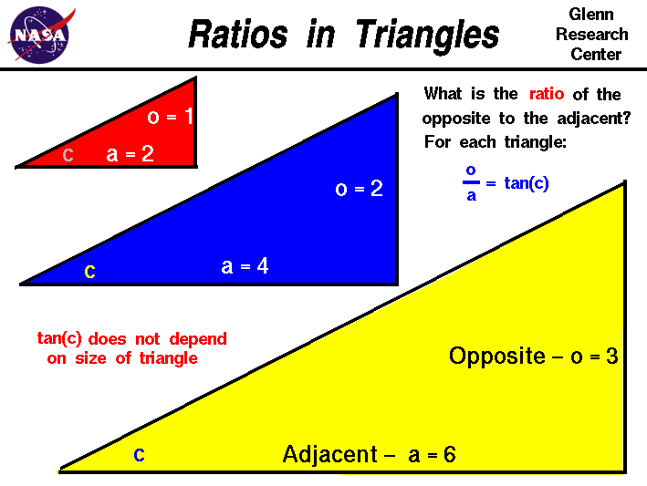

|

To better understand certain problems involving aircraft
and propulsion
it is necessary to use some mathematical ideas from
trigonometry,
the study of triangles. On another page
we have introduced the trigonometric functions
sine, cosine, and tangent
of the angles of a right triangle and described how these
functions
relate the magnitude of the sides of a triangle.
On this page we will further explore the relations
between the sides of a right triangle and demonstrate
that the trigonometric functions depend only the angles
of the triangle and not on the size of
the triangle.
On this page we have constructed three right triangles
of different size, but with the same acute angle c
at the lower left. Using the terminology from the
sine, cosine, and tangent page,
we have made the side opposite the angle c equal
to 1.0 for the red triangle. And we have made the side adjacent
to angle c equal to 2.0. The
ratio
of the opposite to the adjacent for any right triangle is defined to
be the tangent (tan) of the angle. For the red triangle
the value of the tangent is:
tan(c) = 1 / 2 = .5
For the blue triangle, we keep the angle c the same, but
we have doubled the size of the opposite side and the
adjacent side. Mathematicians would say that the blue and
the red triangles are similar triangles; the angles are equal,
but the size is different. What is the ratio of the opposite to the
adjacent for the blue triangle?
tan(c) = 2 / 4 = .5
The same value as for the red triangle. For the yellow triangle, we have
tripled the size of the red triangle. The opposite side is now 3 units
long and the adjacent side is now 6 units long. The yellow triangle
is mathematically similar to the red and the blue triangle.
What is the ratio of the opposite to the adjacent for the yellow triangle?
tan(c) = 3 / 6 = .5
The same value as the red and the blue triangle. We could repeat this process
for any multiple (m) of the sides of the red triangle and
the result would be the same:
tan(c) = (1 * m) / (2 * m) = .5
The value of the tangent (and the sine and cosine) depends on the size of the angle,
not on the size of the triangle.
The initial geometry of the red triangle was arbitrary. If we had picked other
numbers for the ratio of the sides of the red triangle, the value of angle c
would be different and
the value of the tangent would be different. But the same value of the tangent
would occur for the blue and yellow triangles as long as the angle c
is kept the same.
Activities:
Guided Tours
Navigation ..
- Beginner's Guide Home Page
|